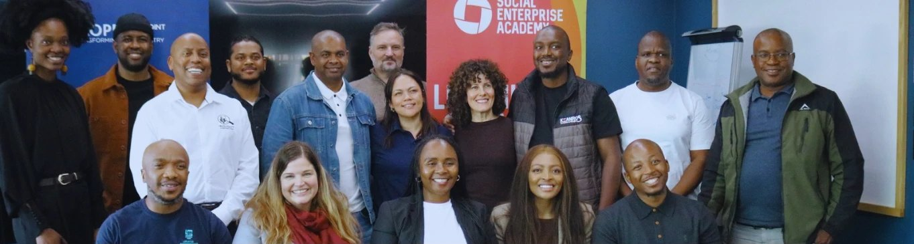

Discover the power of transformational leadership
Build the skills and confidence to lead change in your community through our leadership development learning programmes.
About the programme
About the Programme
For many people, it is difficult to think of themselves as a leader, role model, or source of inspiration. This transformational learning journey is explicitly designed to help you recognise the critical role you play within your team, your organisation, and your broader sector.
Email usProgramme Outline
| Phase / Module | Focus Area | Core Timeline |
|---|---|---|
| Module 1 | Leading & Understanding Myself | Day 1 & Day 2 |
| Module 2 | Leading & Understanding Others | Day 3 & Day 4 |
| Module 3 | Leading Strategically | Day 5 & Day 6 |
What our participants say
What Our Participants Say
From overcoming initial scepticism to learning the art of deep listening, our graduates share how a single commitment to self-discovery transformed not only how they show up in the workplace, but how they connect with others at home.
Property Point founder
Shawn Theunissen's Feedback
“It's so important to invest in programmes like these… businesses can take the takeaways not only for their business, but also for their personal journey and their family.”Shawn Theunissen, founder of Property PointEmail us
Find out more
Find out more
If you're interested in learning more about this Leadership Programme we invite you to contact us directly. We look forward to welcoming you to our community.
This is more than just another programme, it's a transformative journey for your team, your organisation, and your broader sector.
Contact us